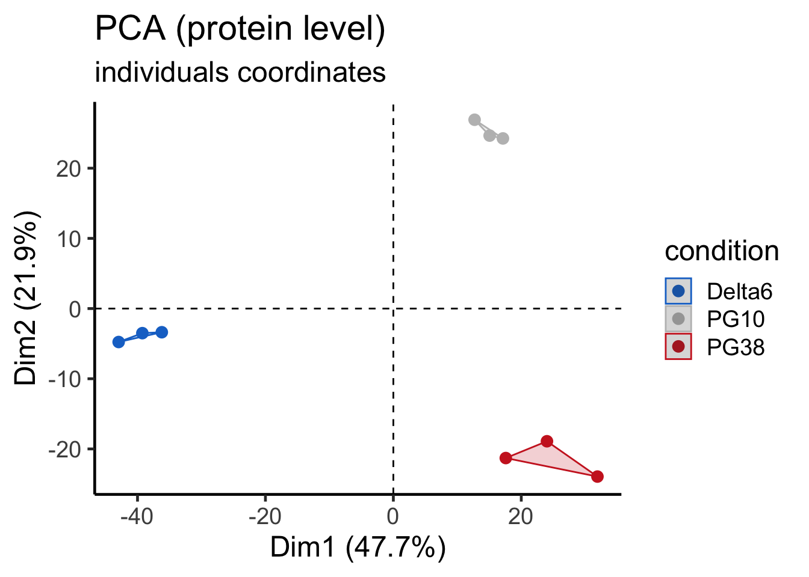
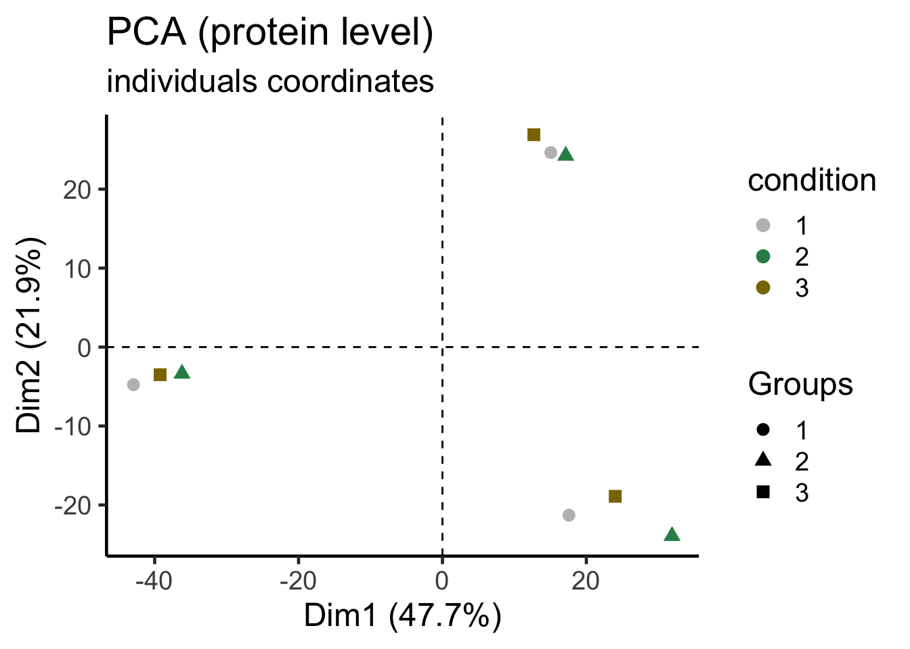
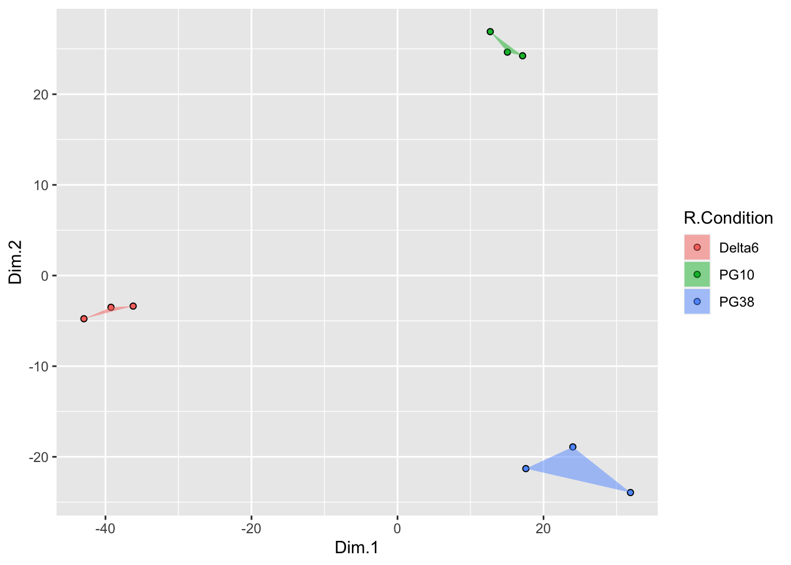
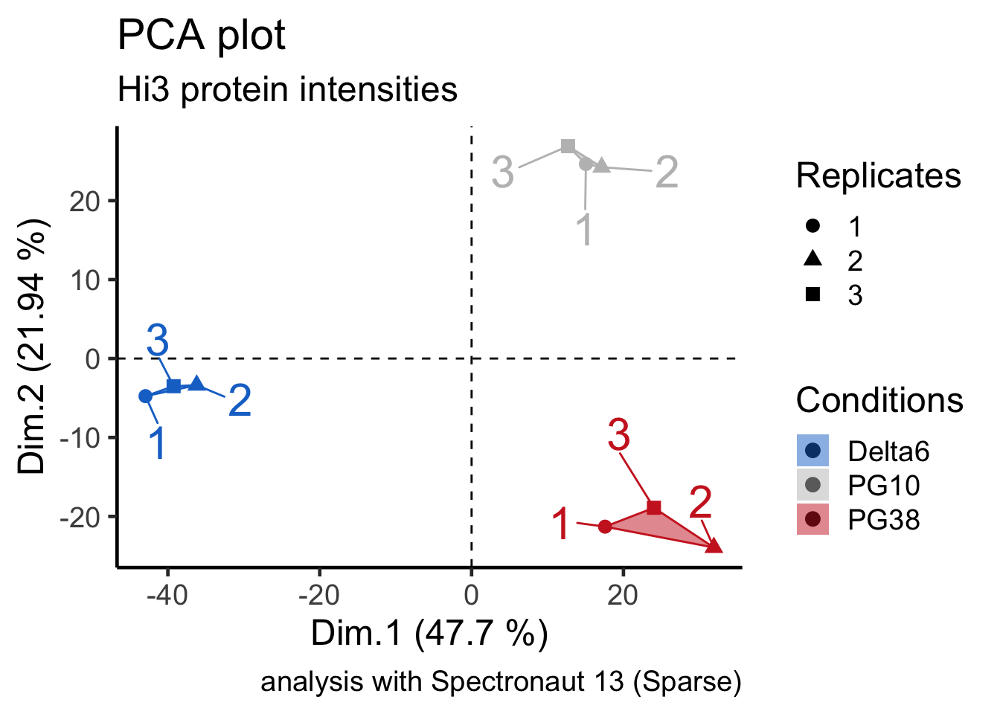
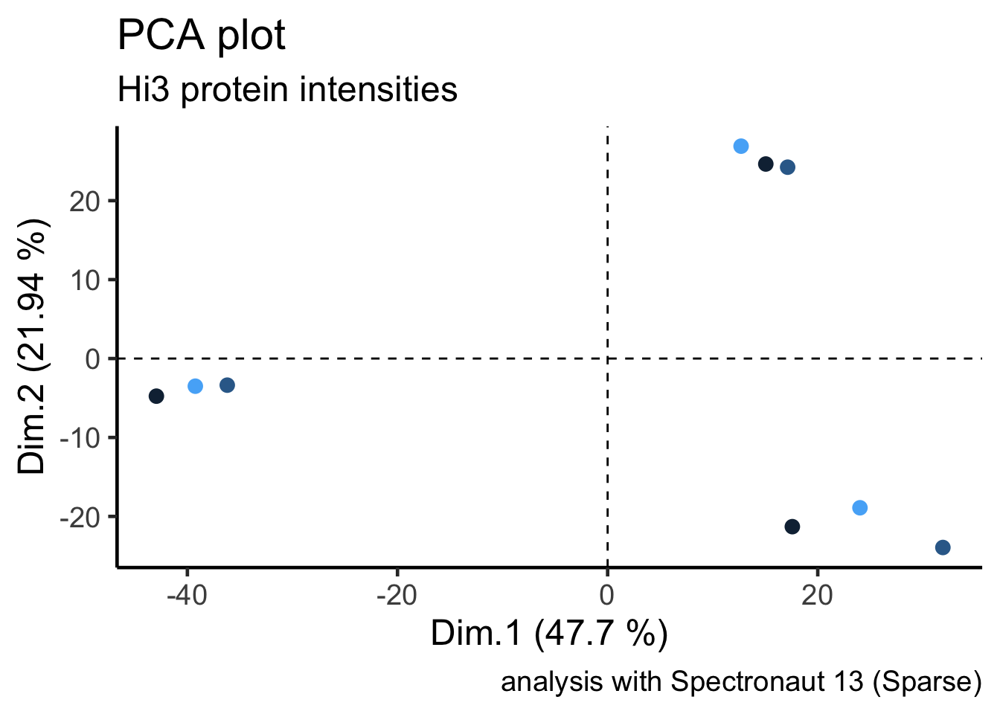
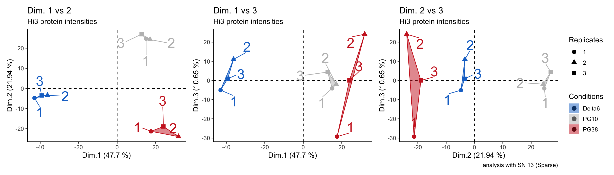

# PCA object handeling and coloring etc.
#
#
#
# load libraries ----------------------------------------------------------
library(tidyverse)
library(FactoMineR)
library(factoextra)
library(ggrepel)
library(patchwork)
# load PCA object from e.g. DIA-MS pipeline -------------------------------
pca <- readRDS("materials/PCA_analysis__protein_level.RDS")
pca## **Results for the Principal Component Analysis (PCA)**
## The analysis was performed on 9 individuals, described by 1696 variables
## *The results are available in the following objects:
##
## name description
## 1 "$eig" "eigenvalues"
## 2 "$var" "results for the variables"
## 3 "$var$coord" "coord. for the variables"
## 4 "$var$cor" "correlations variables - dimensions"
## 5 "$var$cos2" "cos2 for the variables"
## 6 "$var$contrib" "contributions of the variables"
## 7 "$ind" "results for the individuals"
## 8 "$ind$coord" "coord. for the individuals"
## 9 "$ind$cos2" "cos2 for the individuals"
## 10 "$ind$contrib" "contributions of the individuals"
## 11 "$call" "summary statistics"
## 12 "$call$centre" "mean of the variables"
## 13 "$call$ecart.type" "standard error of the variables"
## 14 "$call$row.w" "weights for the individuals"
## 15 "$call$col.w" "weights for the variables"# table of individuals coordinates (this is plotted in a PCA)
pca$ind$coord## Dim.1 Dim.2 Dim.3 Dim.4 Dim.5
## 180619_HFx_ARe_Rafts_Delta6_a1_180509 -42.9 -4.77 -5.05476 -1.391 -5.661
## 180619_HFx_ARe_Rafts_Delta6_a2_180514 -36.2 -3.37 11.00205 1.572 7.599
## 180619_HFx_ARe_Rafts_Delta6_a4_180516 -39.2 -3.50 0.87592 2.011 -1.356
## 180619_HFx_ARe_Rafts_PG10_a1_180509 15.1 24.64 -4.13318 9.118 0.498
## 180619_HFx_ARe_Rafts_PG10_a3_180515 17.1 24.24 -1.90509 16.510 3.895
## 180619_HFx_ARe_Rafts_PG10_a4_180516 12.7 26.90 4.37772 -24.324 -5.972
## 180619_HFx_ARe_Rafts_PG38_a1_180509 17.6 -21.30 -29.28555 -0.039 -5.995
## 180619_HFx_ARe_Rafts_PG38_a2_180514 31.9 -23.94 24.11404 6.157 -10.414
## 180619_HFx_ARe_Rafts_PG38_a3_180515 24.0 -18.91 0.00886 -9.614 17.406
## Dim.6 Dim.7 Dim.8
## 180619_HFx_ARe_Rafts_Delta6_a1_180509 -9.089 -10.928 -6.931
## 180619_HFx_ARe_Rafts_Delta6_a2_180514 4.566 11.720 -8.481
## 180619_HFx_ARe_Rafts_Delta6_a4_180516 4.741 -0.337 15.618
## 180619_HFx_ARe_Rafts_PG10_a1_180509 13.832 -8.387 -3.989
## 180619_HFx_ARe_Rafts_PG10_a3_180515 -12.670 4.489 2.833
## 180619_HFx_ARe_Rafts_PG10_a4_180516 -1.449 3.536 0.785
## 180619_HFx_ARe_Rafts_PG38_a1_180509 2.053 7.030 -1.291
## 180619_HFx_ARe_Rafts_PG38_a2_180514 -0.033 -0.810 -0.322
## 180619_HFx_ARe_Rafts_PG38_a3_180515 -1.950 -6.312 1.777# load conditions ---------------------------------------------------------
habil <- read_delim("materials/sample_to_condition_file.txt",delim = "\t",col_names = T)
# define colors -----------------------------------------------------------
condition_colors <- c("Delta6" = "dodgerblue3", "PG10" = "grey", "PG38" = "firebrick3")
replicate_colors <- c("1" = "grey", "2" = "seagreen4", "3" = "gold4")
# check if samples are arranged in the same way ---------------------------
sum(habil$R.FileName == rownames(pca$ind$coord)) == nrow(habil)## [1] TRUE# plot with factoxtra package ---------------------------------------------
pca_plot_protein<- fviz_pca_ind(pca,
axes = c(1, 2),
mean.point=F,
pointshape=19,
pointsize=3,
label="none",
ellipse.type = "convex",
ellipse.alpha=0.2,
addEllipses = T,
ellipse.level=0.95,
habillage = as.factor(habil$R.Condition))+
scale_color_manual(values = condition_colors)+
scale_fill_manual(values = condition_colors)+
theme_classic(base_size = 18)+
labs(title="PCA (protein level)",subtitle="individuals coordinates",color="condition")+
guides(fill= "none")
pca_plot_protein
#by replicate
pca_plot_protein<- fviz_pca_ind(pca,
axes = c(1, 2),
mean.point=F,
#pointshape=19,
pointsize=3,
label="none",
ellipse.type = "convex",
ellipse.alpha=0.2,
addEllipses = F,
ellipse.level=0.95,
habillage = as.factor(habil$R.Replicate))+
scale_color_manual(values = replicate_colors)+
scale_fill_manual(values = replicate_colors)+
theme_classic(base_size = 18)+
labs(title="PCA (protein level)",subtitle="individuals coordinates",color="condition")+
guides(fill="none")
pca_plot_protein
# same plot with tidyverse ------------------------------------------------
# get individuals data
ind_data <- as.data.frame(pca$ind$coord)
ind_data$R.FileName <- rownames(ind_data)
ind_data <- as_tibble(ind_data)
# add condition file info
ind_data <- left_join(ind_data,habil,by = "R.FileName")
# generate the convex hull
hull_group <- ind_data %>%
group_by(R.Condition) %>%
slice(chull(Dim.1, Dim.2))
# slice --> dplyr function
# chull --> grDevice function
## Computes the subset of points which lie on the convex hull of the set of points specified.
# Define the scatterplot
ggPCA <- ggplot(ind_data, aes(Dim.1, Dim.2, fill = R.Condition)) +
geom_point(shape = 21)
# Overlay the convex hull
ggPCA + geom_polygon(data = hull_group, alpha = 0.5)
# refine ggPCA plot -------------------------------------------------------
# plot PCA with ggplot2
ggPCA <- ggplot(ind_data, aes(x = Dim.1, y = Dim.2,
color = R.Condition,
fill = R.Condition)) +
geom_hline(yintercept = 0,linetype = "dashed")+
geom_vline(xintercept = 0,linetype = "dashed")+
theme_classic(base_size = 18)+
geom_point(mapping = aes(shape = as.factor(R.Replicate)),size=3)+ # add point shape R.Replicate
geom_polygon(data = hull_group, alpha = 0.5)+ # add convex shape
scale_color_manual(values = condition_colors)+
scale_fill_manual(values = condition_colors)+
labs(title = "PCA plot",
subtitle = "Hi3 protein intensities",
caption = "analysis with Spectronaut 13 (Sparse)",
x = paste("Dim.1 (",round(pca$eig[1,2],digits = 2)," %)",sep=""),# labeling of axis
y = paste("Dim.2 (",round(pca$eig[2,2],digits = 2)," %)",sep=""),
# get expl. variance Dim.xxx data by pca$eig[xxx,2]
shape = "Replicates",
color = "Conditions",
fill = "Conditions")+
geom_text_repel(mapping = aes(label = R.Replicate),
size = 8,
min.segment.length = 0.01,
box.padding = 1)+
guides(color="none")
ggPCA
# plot PCA color according to replicate (e.g. same for measurement order)
ggplot(ind_data, aes(x = Dim.1, y = Dim.2,
color = R.Replicate)) +
geom_hline(yintercept = 0,linetype = "dashed")+
geom_vline(xintercept = 0,linetype = "dashed")+
theme_classic(base_size = 18)+
geom_point(size=3)+ # add point shape R.Replicate
labs(title = "PCA plot",
subtitle = "Hi3 protein intensities",
caption = "analysis with Spectronaut 13 (Sparse)",
x = paste("Dim.1 (",round(pca$eig[1,2],digits = 2)," %)",sep=""),# labeling of axis
y = paste("Dim.2 (",round(pca$eig[2,2],digits = 2)," %)",sep=""),
# get expl. variance Dim.xxx data by pca$eig[xxx,2]
shape = "Replicates",
color = "Conditions",
fill = "Conditions")+
guides(color="none")
# plot till function 3rd dimmension ------------------------------------------------
plot_function_PCA <- function(data_to_plot = pca,
habil = habil,
condition_colors = condition_colors){
require(patchwork)
# get individuals data
ind_data <- as.data.frame(pca$ind$coord)
ind_data$R.FileName <- rownames(ind_data)
ind_data <- as_tibble(ind_data)
# add condition file info
ind_data <- left_join(ind_data,habil,by = "R.FileName")
# generate the convex hull
hull_group_1_2 <- ind_data %>%
group_by(R.Condition) %>%
slice(chull(Dim.1, Dim.2))
hull_group_1_3 <- ind_data %>%
group_by(R.Condition) %>%
slice(chull(Dim.1, Dim.3))
hull_group_2_3 <- ind_data %>%
group_by(R.Condition) %>%
slice(chull(Dim.2, Dim.3))
ggPCA_1_2 <- ggplot(ind_data, aes(x = Dim.1, y = Dim.2,
color = R.Condition,
fill = R.Condition)) +
geom_hline(yintercept = 0,linetype = "dashed")+
geom_vline(xintercept = 0,linetype = "dashed")+
theme_classic(base_size = 12)+
geom_point(mapping = aes(shape = as.factor(R.Replicate)),size=3)+ # add point shape R.Replicate
geom_polygon(data = hull_group_1_2, alpha = 0.5)+ # add convex shape
scale_color_manual(values = condition_colors)+
scale_fill_manual(values = condition_colors)+
labs(title = "Dim. 1 vs 2",
subtitle = "Hi3 protein intensities",
caption = "",
x = paste("Dim.1 (",round(pca$eig[1,2],digits = 2)," %)",sep=""),# labeling of axis
y = paste("Dim.2 (",round(pca$eig[2,2],digits = 2)," %)",sep=""),
# get expl. variance Dim.xxx data by pca$eig[xxx,2]
shape = "Replicates",
color = "Conditions",
fill = "Conditions")+
geom_text_repel(mapping = aes(label = R.Replicate),
size = 8,
min.segment.length = 0.01,
box.padding = 1)+
guides(color="none", shape = "none", fill="none")
ggPCA_1_3 <- ggplot(ind_data, aes(x = Dim.1, y = Dim.3,
color = R.Condition,
fill = R.Condition)) +
geom_hline(yintercept = 0,linetype = "dashed")+
geom_vline(xintercept = 0,linetype = "dashed")+
theme_classic(base_size = 12)+
geom_point(mapping = aes(shape = as.factor(R.Replicate)),size=3)+ # add point shape R.Replicate
geom_polygon(data = hull_group_1_3, alpha = 0.5)+ # add convex shape
scale_color_manual(values = condition_colors)+
scale_fill_manual(values = condition_colors)+
labs(title = "Dim. 1 vs 3",
subtitle = "Hi3 protein intensities",
caption = "",
x = paste("Dim.1 (",round(pca$eig[1,2],digits = 2)," %)",sep=""),# labeling of axis
y = paste("Dim.3 (",round(pca$eig[3,2],digits = 2)," %)",sep=""),
# get expl. variance Dim.xxx data by pca$eig[xxx,2]
shape = "Replicates",
color = "Conditions",
fill = "Conditions")+
geom_text_repel(mapping = aes(label = R.Replicate),
size = 8,
min.segment.length = 0.01,
box.padding = 1)+
guides(color="none", shape = "none", fill="none")
ggPCA_2_3 <- ggplot(ind_data, aes(x = Dim.2, y = Dim.3,
color = R.Condition,
fill = R.Condition)) +
geom_hline(yintercept = 0,linetype = "dashed")+
geom_vline(xintercept = 0,linetype = "dashed")+
theme_classic(base_size = 12)+
geom_point(mapping = aes(shape = as.factor(R.Replicate)),size=3)+ # add point shape R.Replicate
geom_polygon(data = hull_group_2_3, alpha = 0.5)+ # add convex shape
scale_color_manual(values = condition_colors)+
scale_fill_manual(values = condition_colors)+
labs(title = "Dim. 2 vs 3",
subtitle = "Hi3 protein intensities",
caption = "analysis with SN 13 (Sparse)",
x = paste("Dim.2 (",round(pca$eig[2,2],digits = 2)," %)",sep=""),# labeling of axis
y = paste("Dim.3 (",round(pca$eig[3,2],digits = 2)," %)",sep=""),
# get expl. variance Dim.xxx data by pca$eig[xxx,2]
shape = "Replicates",
color = "Conditions",
fill = "Conditions")+
geom_text_repel(mapping = aes(label = R.Replicate),
size = 8,
min.segment.length = 0.01,
box.padding = 1)+
guides(color="none")
ggPCA_1_2+ggPCA_1_3+ggPCA_2_3
}# use plot function
# !!!! set condition colors!!!! for function
condition_colors <- c("Delta6" = "dodgerblue3", "PG10" = "grey", "PG38" = "firebrick3")
plot_function_PCA(data_to_plot = pca,
habil = habil,
condition_colors = condition_colors)
# load libraries ----------------------------------------------------------
library(seqinr)#CRAN
library(Biostrings)# BioConductor
library(Peptides)#CRAN
library(OrgMassSpecR)#CRAN
library(stringr) #CRAN
# load fasta files --------------------------------------------------------
d <- read.fasta(file = "materials/2015_Bsubtilis_168_uniprot-proteome_for_iRT_cRAP.fasta",seqtype = "AA",as.string = T,strip.desc = F,seqonly = F)
# extract full annotation -------------------------------------------------
full_header<- unlist(lapply(d,function(x) attr(x,"Annot")))
# split just names --------------------------------------------------------
names_split_list<- sapply(names(d),function(x){ str_split(string = x,pattern = "\\|")})
fullnames_split_list<- sapply(full_header,function(x){ as.character(c(unlist(
str_split(string = unlist(str_split(string = x,pattern = " ",n = 2))[1],
pattern = "\\|")),
unlist(str_split(string = x,pattern = " ",n = 2))[2]))})
# split full fasta header -----------------------------------------------
#reformat to tibble
names_split_df<- do.call(what = rbind.data.frame,args = names_split_list)
full_names_split_tibble <- do.call(what = rbind.data.frame,args = fullnames_split_list)
colnames(full_names_split_tibble) <- c("db","entry","name","desc")
# write fasta file --------------------------------------------------------
write.fasta(sequences = d,names = full_names_split_tibble$entry,file.out = "test.fasta")
# other useful functions --------------------------------------------------
#theoretical digest with OrgMassSpecR
digest_of_protein<- OrgMassSpecR::Digest(sequence = unlist(d[1]),enzyme = "trypsin",missed = 2,IAA = F)
digest_of_protein#aa compisition
Peptides::aaComp(seq = unlist(d[1]))## $`sp|O05413|2NPD_BACSU`
## Number Mole%
## Tiny 100 28.82
## Small 163 46.97
## Aliphatic 111 31.99
## Aromatic 28 8.07
## NonPolar 191 55.04
## Polar 156 44.96
## Charged 80 23.05
## Basic 39 11.24
## Acidic 41 11.82#pI
Peptides::pI(seq = unlist(d[1]))## sp|O05413|2NPD_BACSU
## 5.26#MW
Peptides::mw(seq = unlist(d[1]))## sp|O05413|2NPD_BACSU
## 38069# load libraries
library(tidyverse)
library(helfRlein)
library(ggpubr)
#set working directory
setwd("~/Desktop/R_pipeline_analysis_scripts/DIA-MS__Spectronaut_analysis__working/05_processed_data/257_sample_analysis")
# load data
dat <- read_delim(file = "Hi3_protein_intensity_data.txt",delim = "\t",col_names = T)
# split to get condition
dat_Bcond <- dat %>%
filter(grepl(pattern = "B_",x = R.Condition)) %>%
separate(col = R.Condition,
into = c("Condition","Time"),
sep = "_",remove = F)
#anova test using ggpubr
anova_test<- ggpubr::compare_means(formula = protein_Hi3_Intensity~Time,
group.by = "PG.ProteinGroups",
paired = F,
method = "anova",
data = dat_Bcond)
# kruskal test
kruskal_test<- ggpubr::compare_means(formula = protein_Hi3_Intensity~Time,
group.by = "PG.ProteinGroups",
paired = F,
method = "kruskal.test",
data = dat_Bcond)
# wilcox test
wilcox_test<- ggpubr::compare_means(formula = protein_Hi3_Intensity~Time,
group.by = "PG.ProteinGroups",
paired = F,
p.adjust.method = "BH",
method = "wilcox.test",
data = dat_Bcond)
#levels of time factor
lev<-unique(unlist(dat_Bcond$Time))
lev.comb<-combn(lev,m = 2)
lev.out<-list()
for(i in 1:ncol(lev.comb)){
lev.out[[i]]<-c(lev.comb[1,i],lev.comb[2,i])
}
stats_out<-c()
proteins<-unique(unlist(dat_Bcond$PG.ProteinGroups))
for(i in 1:length(lev.out)){
#helfRlein statusbar
statusbar(run = g,max.run = length(proteins),percent.max = 60L,info = "testing...")
stats_tmp<-c()
for(g in 1:length(proteins)){
#filter data
tmp_dat <- dat_Bcond %>% filter(proteins[g]==PG.ProteinGroups)
t1<-c();t1<-tmp_dat %>% filter(Time==lev.out[[i]][1])
t2<-c();t2<-tmp_dat %>% filter(Time==lev.out[[i]][2])
#Wilcoxon rank sum test with continuity correction
tmp_test <- wilcox.test(x = t1$protein_Hi3_Intensity,
y = t2$protein_Hi3_Intensity,
alt= "two.sided",
conf.int= T,
conf.level= 0.95,
paired= FALSE,
mu=0)
stats_tmp<-bind_rows(stats_tmp,
tibble(proteinID = proteins[g],
median.ratio = median(t1$protein_Hi3_Intensity,na.rm=T)/median(t2$protein_Hi3_Intensity,na.rm = T),
mean.ratio = mean(t1$protein_Hi3_Intensity,na.rm=T)/mean(t2$protein_Hi3_Intensity,na.rm = T),
p.value = as.numeric(tmp_test$p.value),
lower.confidence.level = as.numeric(tmp_test$conf.int)[1],
upper.confidence.level = as.numeric(tmp_test$conf.int)[2],
differnce.in.location = as.numeric(tmp_test$estimate),
comparison = paste(unlist(lev.out[[i]]),collapse = " vs. ")
)
)
}
#global p-value adjusting over proteins
stats_tmp$p_value_adjusted_BH<-p.adjust(p = stats_tmp$p.value,method = "BH")
#combine resp stats
stats_out<-rbind(stats_out,stats_tmp)
}
dat_Bcond %>%
filter(PG.ProteinGroups=="Q9WVL7") %>%
summarise(list(wilcox.test(protein_Hi3_Intensity[Time=="24h"]~protein_Hi3_Intensity[Time=="2h"])))
# get results for Q6A0A9
anova_test %>% filter(PG.ProteinGroups=="Q6A0A9")
kruskal_test %>% filter(PG.ProteinGroups=="Q6A0A9")
wilcox_test%>% filter(PG.ProteinGroups=="Q6A0A9")
# filter wilcox test examples
filter_prot<- wilcox_test %>%
group_by(PG.ProteinGroups) %>%
mutate(significant = ifelse(test = p<0.05,yes = 1,no = 0)) %>%
summarise(significant_count = sum(significant))
View(wilcox_test%>% filter(PG.ProteinGroups=="Q6A0A9"))
dat_Bcond %>%
filter(PG.ProteinGroups=="B2RUR8") %>%
ggplot(aes(Time,protein_Hi3_Intensity))+geom_boxplot()foreachForeach is very easy to use when you can write a simple
for loop. Also foreach needs a given sequence
to iterate over.
BUT; the .combine parameter is very important. Since
your data will be split for the parallization process and your result
will be combined as output. There you should know if your output is a
vector or a dataframe which sould be combined row-wise or
column-wise.
.combine can be specified as either a function or a
non-empty character string naming the function. Specifying
c is useful for concatenating the results into a vector,
for example. The values cbind and rbind can
combine vectors into a matrix. The values + and
* can be used to process numeric data. By default, the
results are returned in a list.
switching between single and multicore mode: When
using %do% the loop will be iterated on 1 core, when using
%dopar% multiple cores are used.
The number of cores can be setup in generating a cluster. See full example below.
#install.packages("foreach")
#install.packages("doParallel")
library(foreach)
library(doParallel)
#Start a cluster with 4 cores
cl <- parallel::makeCluster(4, outfile = "") # number of cores can be changed depending on your system
registerDoParallel(cl) #register cores
#setup the progressbar
## i_end should be the length of your iteration vector
pb <- txtProgressBar(min = 0,max = i_end, style = 3)
#do calculation in parallel
results_foreach_loop <- foreach(i=1:i_end, .combine=rbind.data.frame) %dopar% {
#use the foreach function in parallel processing mode (dopar)
setTxtProgressBar(pb, i)
##
## here your code inside the loop which will be executed in parallel
##
}
close(pb)#closing progressbar
stopCluster(cl)#closing cluster for parallel computing